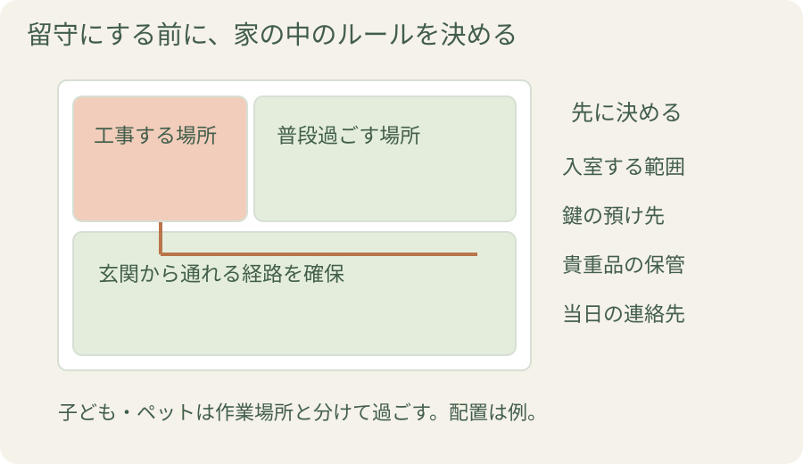
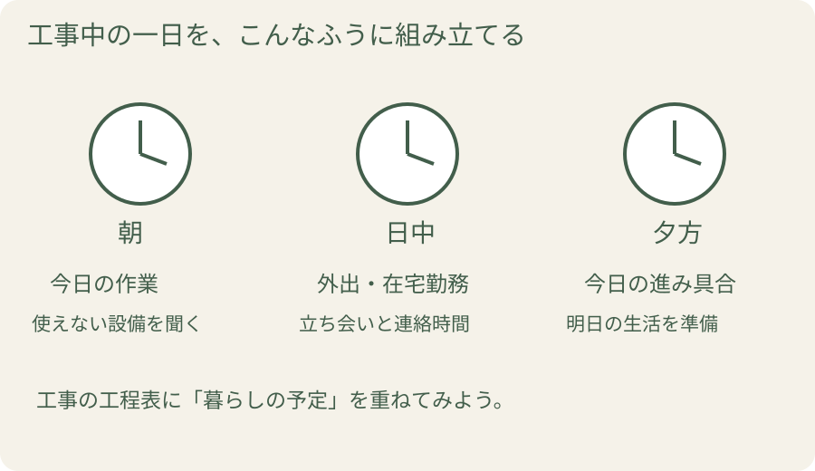

リフォーム中、毎日お茶を出すの？ 仕事に行っても大丈夫？ 楽しみなはずの工事が、気遣いでいっぱいになっていませんか。お茶出しは基本的に不要とする会社が多く、留守中の工事も相談できます。大切なのは、工事に合わせて暮らしを我慢するより、いつもの生活を先に伝えることです。
1. お茶や昼食は、どこまで用意する？
気持ちは「ありがとうございます」で十分。
お茶や昼食を毎日の仕事にしなくて大丈夫です。
お茶や昼食を毎日の仕事にしなくて大丈夫です。
お茶やお菓子を不要と案内する会社は多く、昼食も通常は職人さんが用意します。会社の方針を一度確かめたら、毎日気にしなくて大丈夫。感謝を伝えたいときは、朝夕の挨拶や「助かりました」の一言でも伝わります。
差し入れをしたいときは、受け取りの方針や休憩のタイミングを聞いておきましょう。作業を止めて声をかけるより、担当者を通して渡す方法もあります。
あわせて確認したいのがトイレです。自宅のトイレを使うのか、別の方法を取るのか。水道や電気を使う作業も含め、使ってよい場所と時間を決めます。私なら、おもてなしの準備よりも、まず互いに気兼ねなく働き、暮らせる取り決めを優先します。
2. 工事中に外出したい。何を決めておけばいい？
工事中ずっと家にいるのが難しい場合は、そのことを初めに伝えましょう。室内に入る作業があるか、確認のために立ち会う日があるかによって、外出の段取りが変わります。

鍵を預けるなら、誰が管理し、どう保管し、いつ返すかまで確認します。貴重品や個人の書類は自分で管理し、入ってほしくない部屋も伝えておきます。
その場で判断が必要になったときの連絡先も決めましょう。電話に出られない時間があれば、「何時なら折り返せるか」まで知らせると、担当者も予定を組みやすくなります。
3. お風呂・トイレ・食事はどうなる？
工程表には、工事名に加えて「暮らしで使えないもの」を書いてもらうのがおすすめです。「浴室工事」と書かれているだけでは、いつ入浴できるかはわかりません。
| 工事の例 | 着工前に聞くこと | わが家の準備 |
|---|---|---|
| 浴室 | 入浴できない期間、再開の確認方法 | 入浴できる場所を決める |
| キッチン | 調理・洗い物・水道が使えない期間 | 食事と片付けの方法を決める |
| トイレ | 使用できない時間、代わりの方法 | 家族が使える場所を確保する |
| 外壁・窓 | 外干しや窓の開閉に制限がある日 | 室内干しや換気方法を相談する |
期間や制限は現場ごとに違います。日程が変わったときは、完成日と一緒に生活への影響も知らせてもらう約束にしておきましょう。
「キッチン工事は3日間です」と言われたら
「初日の朝ごはんは作れますか？ 最終日の夕食から使えますか？ 洗い物はどこでできますか？」
日数は質問のための例です。実際の使用再開時刻を確認しましょう。
4. 音、荷物、ペット。暮らしの条件を伝えよう
在宅勤務の会議、子どもの昼寝、家族の通院。普段の予定は、工事の担当者には見えていません。「午後にオンライン会議があります。音が大きい作業はいつですか」と具体的に聞いてみましょう。
家具や荷物は、どこまで自分で動かし、どこから会社に頼むかを決めます。大きな物は無理に運ばず相談を。玄関までの通路を確保し、子どもやペットが作業場所に入らない過ごし方も用意します。
近隣への挨拶を誰が行うか、工事車両をどこに置くかも確認事項です。会社が挨拶をする場合でも、伝える工期や連絡先を共有しておくと、自分が近所の方に会ったときにも話しやすくなります。
5. 一日の終わりに、明日の予定を聞く
「今日はここまで終わりました。明日は、この窓を開けられない時間があります」。こんな短い連絡があると、翌日の洗濯や外出を考えられます。

毎日確認したいのは、今日の作業、明日の予定、生活への影響の三つ。対面でもメールでも、双方が続けやすい方法を決めましょう。気になる点や追加の希望は、窓口にした担当者へまとめて伝えます。